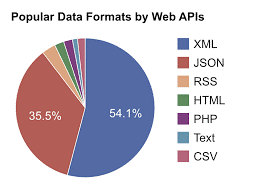

API Definition
Application program interface (API) is a set of routines, protocols, and tools for building software applications. An API specifies how software components should interact.
Examples of APIs
- Google Drive API: Manages files in Drive including uploading, downloading, searching, detecting changes, and updating sharing permissions.
- Gmail API: Access Gmail mailboxes including sending user email.
- YouTube Data API: Supports core YouTube features, such as uploading videos, creating and managing playlists, searching for content, and much more.
- Google Translate API: Translates text from one language to another.
- Facebook API, Twitter API, Google+, ect.
- Google API Explorer
- Google Translate API: Translates text from one language to another.
Use APIs to login to sites or apps.
How are APIs stored?
JSON (which stands for Java Script Object Notation) is an alternative to XML. It gets its name from the fact that its data format resembles JavaScript objects, and it is often more clear than the equivalent XML. For example,
{
"pets": {
"name": "Jeffrey",
"species": "Giraffe"
}
}
XML (which stands for Extensible Markup Language) is very similar to HTML—it uses tags between angle brackets. The difference is that XML allows you to use tags that you make up, rather than tags that the W3C decided on. For instance, you could create an API that returns information about a pet:
>pet>
>name>Jeffrey>/name>
>species>Giraffe>/species>
>/pet>
The API just needs documentation for you to use it right.
API Documentation and Glossary
API documentation is the format in which the API developer wrote their code so that it could be used. You have to know the correct documentation before you can utilize their API. They are basically making a new library of functions for you to use, you just have to learn what they are called, tell your HTML to look up stuff in that API library, and you can now use the code found inside of it.
Making sure you are using current documentation is important.
Using the right documentation is simple, its just like we need to use the right id’s for elements in our css to affect the right element in our HTML.
API – What to know.
Without APIs we would need to program all the code required to use peoples products.
APIs, while the have difficult syntax, are important to learn and are necessary for any good programmer to be familiar with.
We can implement others APIs, but we can also make our own.
Simply put, APIs make data transfer possible by allowing our code to talk to other people’s code.